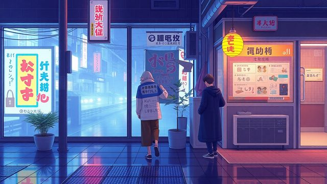

CH02-080 — images
【休む罪】罪悪感で休めないメカニズム
ep
CH02
Script Viewer
snapshot
guide
script
audio
thumb
images
CH02-080
images
updated_at: 2026-01-12T10:15:07.743046Z
run_id:
CH02-080_mix433_20260106
CH02-080
不安な休息／休むことへの恐怖
CH02-080
前提の書き換え／脳の回復の必要性／休みの再定義
CH02-080
具体的な休みの方法／小さな休みの積み重ね
CH02-080
休むことの論理／紙に罪悪感を書き出す
CH02-080
休みの効果を記録する／休みの哲学的意義
CH02-080
体を緩める方法
CH02-080
休息の哲学／休む権利
CH02-080
休みの条件付け
CH02-080
動きながら休む
CH02-080
夜の休みの準備
CH02-080
小さな休みの認識／休みの種類分け／切り替えの儀式
CH02-080
比較の無限性
CH02-080
休みの積極的選択
CH02-080
無意味な時間の価値
CH02-080
警戒モードの脳／休みの罪悪感／休みの三種類／ミニ休暇の効果
CH02-080
体の栄養と休み
CH02-080
休憩の場所を決める／タイマーを使った休憩／休憩のルール化
CH02-080
休みの創造性／休みの社会的意義
CH02-080
時間の作り方
CH02-080
作業と休みの混合
CH02-080
朝の光と睡眠／休みの振り返り
CH02-080
境界の重要性
CH02-080
情報の制限
CH02-080
再開の小さな一歩／罪悪感の転換
CH02-080
五感を使った休み／外部の雑音の遮断
CH02-080
休みの共有／通知の切断／休息の再起動
CH02-080
未来への贈り物／呼吸によるリセット
CH02-080
引き継ぎの重要性
CH02-080
自然の癒し
CH02-080
短い瞑想
CH02-080
可視性の低下
CH02-080
燃え尽きまでの道筋
CH02-080
軽いタスクからの再開
CH02-080
音の環境整備／深さ優先の休み／休みと遊びの結びつけ
CH02-080
記憶の書き換え
CH02-080
遅さの回復
CH02-080
習慣の形成
CH02-080
美徳の再定義
CH02-080
体と心のチェック
CH02-080
作業の区切り
CH02-080
進捗のメモ／休みの可視化
CH02-080
休みの合図／休みの仲間作り／週末の前倒し休憩／休みの貸し借り
CH02-080
リズムの尊重
CH02-080
回復の記録／休みの勇気
CH02-080
小さな選択の積み重ね／休みの保留

CH02-080
休みの実践